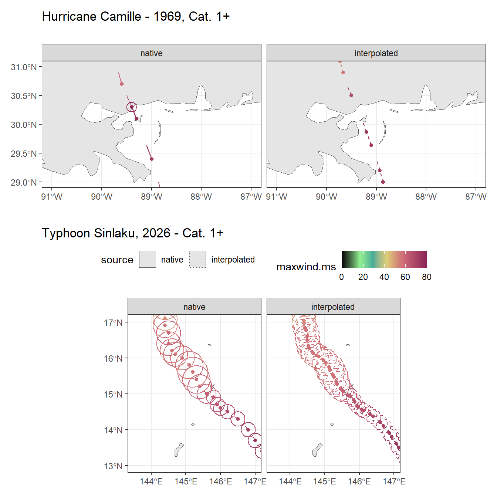
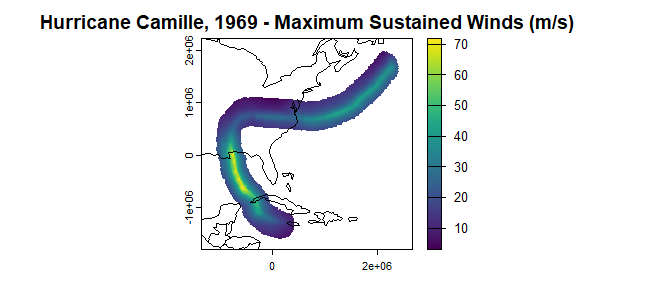
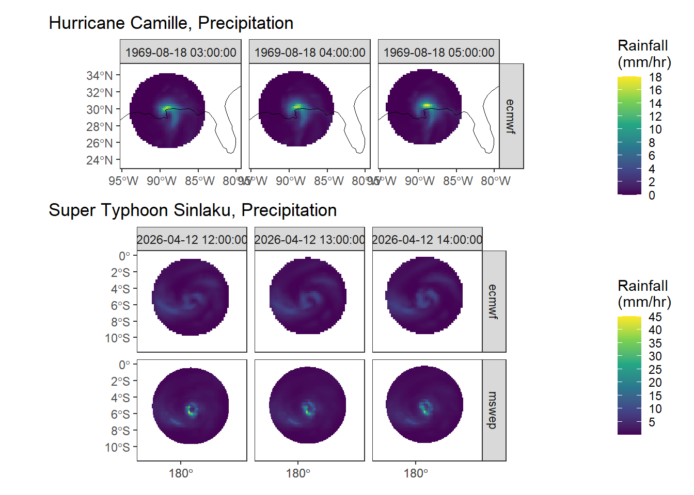

Introduction
Highlights
- Produce raster images of cyclone winds, rains, and storm surge,
either at specific times or as aggregate
- Choose data sources and temporal and spatial resolutions
Future Implementation Ideas
- Integrate NISAR data for:
- Soil moisture
- Flooding extent
- Biomass loss
- Integrate STAR NESDIS SAR for windspeed comparisons
- Integrate LANDSAT for NDVI
- Integrate available LiDAR or NAIP clouds for canopy structure
- Integrate SLOSH for storm surge
Introduction
R utilities for producing variable temporal and spatial resolution gridded and time-stacked representations of tropical cyclone wind, precipitation, and storm surge.
A note on lists, rasters, wrapping, and parallelization. Most of the functions in ‘Cyclones’ produce and operate over lists, primarily because they work nicely with lapply() and its parallel equivalents. This makes it relatively easy to process multiple storms in parallel or to process a single storm in parallel. However, raster data via ‘terra’ can not be passed across parallel workers unless they are wrapped. Thus, for now, the raster products in Cyclones will always be wrapped and must first be unwrapped before they can be utilized in traditional workflows.
Parallel processing is mostly only necessary for multiple storms or for high resolution outputs and we recommend users familiarize themselves with the sequential default functions and only then utilize parallel when ready for batch processing. For internal functions, parallelism is done via snowfall at the timestep level. This is best for high resolution (both temporal (<15 mins) and/or spatial (<10000 m)) outputs and especially when producing Thin Plate Spline (TPS) outputs, and is probably best utilized if at least 5-10 cpus could be set aside for the effort, but there hasnt been any in-depth test of performance yet. Parallelizing at the storm level is demonstrated below in snowfall, but could be done with other libraries at the user’s discretion and also could be done with only a few (<5) cpus. The functions will not allow you to do both internal and external parallelization, but otherwise, the user is expected to know how many cpus can be safely utilized on their system.
Get Storm Tabular Data
Use the ‘get_storms()’ function to gather the available time series, location, and meteorological information for a particular storm. If a local, pre-downloaded IBTrACS .csv or .nc data source is available, it can be used, either as the file location or as a pre-loaded dataset. If not, the data will be downloaded from the web.
library(Cyclones)
## storms can be singular or plural and can be identified specifically, or not
## HURDAT data are relatively limited compared to IBTrACS and may not have full
## functionality for wind products, but should be sufficient for precipitation and storm surge.
storms <- get_storms(source="hurdat",name="Camille",basin="NA",season=1969)
storms <- get_storms(name=c("Maria","IRMA"),basin="NA",season=2017)
names(storms)
## alternatively, all of the data can be downloaded and filtered later
## we recommend this if wind models need to be constructed in later steps
## downloading all storms or any storm distant historical storm will likely
## require extending the timeout time
## options(timeout = 300)
allstorms <- get_storms(ib_filt="ALL")
storms <- allstorms[grep("CAMILLE_1969|SINLAKU_2026",names(allstorms))]
## the result is a named list of data pertinent to each storm
## Names are consistent throughout Cyclones and include the name, season, basin, and ID#
names(storms)The ‘get_storms()’ function will automatically consolidate variables across agencies. If only one value is available for a given variable (for example, among the ’_WIND’ variable versions of USA_WIND, WMO_WIND, WELLINGTON_WIND etc.), it will be used. But, many storms reflect reporting from multiple agencies that need to be consolidated in some way for further processing. Because the ‘USA’ variables have less missing values than the other agencies across the entire dataset, they are prioritized by default and will be used if other agency values are present. If the preferred agency is not present, all the other values will be averaged as the consolidated value. However, it is important to note that the USA uses 1 minute intervals to define maximum sustained winds, while most of the rest of the world uses 10 minute intervals. Thus, the other agency values will first be converted to “1 minute” intervals using a linear relationship based on the full dataset. No consolidation is achieved by setting ‘consolidate’ to FALSE. Other consolidation preferences can be stipulated by using arguments from the ‘cons_stormdat()’ function, such as ‘pref’ = “WMO” to preference the World Meteorological Organization values instead, or by setting ‘msw_int’ to “10min” to convert all values to 10 minutes instead. Alternatively, the ‘cons_stormdat()’ function can be used after ‘get_storms(consolidate=FALSE)’.
Make Wind Extent Spatial Features
In some cases, it may be desired to produce simple spatial features of important storm extents, such as the radius of maximum wind, the eye wall diameter, or the radius of the last closed isobar (ROCI). The make_extents() function will do this utilizing the native data, which is typically in 3hr intervals. The function will also interpolate data to a greater frequency using the ‘t_res’ argument, and can incorporate models via the ‘mods’ argument to fill in missing extents. See the ‘Winds’ vignette for more details.
## generate linestring (default) and polygon (optionally) wind extent features for each timestep
## in each storm. When used as shown below with multiple storms as an input, the functions will
## only perform the action on the first storm
windextents <- make_extents(storms,type=c("linestrings","polygons"))
## To apply the function to all storms, use lapply or a parallel equivalent (snowfall::sfLapply)
## use the t_res parameter to adjust temporal resolution (in minutes)
windextents <- lapply(storms,make_extents)These spatial features can also be good for certain storm visualizations in which a fully gridded raster is not necessary.
![Fig 1A. The results of make_extents() are storm tracks, as well as outer limits of various wind and pressure values. If t_res was utilized, interpolated features are also created to fill in the missing times. Additionally, the 'mods' argument can be used to model wind and pressure values that are missing, which is usually the case for older storms or sometimes for storms outside of USA jurisdiction. In this case, an older storm (Camille) has very little native information and because modeling was not utilized in 'make_extents()', there are no wind or pressure extents. Sinlaku, however, as a modern storm over US interests (Mariana Islands), contains more native data and thus more features to map.](index_files/figure-html/plot-extents-1.png)
Fig 1A. The results of make_extents() are storm tracks, as well as outer limits of various wind and pressure values. If t_res was utilized, interpolated features are also created to fill in the missing times. Additionally, the ‘mods’ argument can be used to model wind and pressure values that are missing, which is usually the case for older storms or sometimes for storms outside of USA jurisdiction. In this case, an older storm (Camille) has very little native information and because modeling was not utilized in ‘make_extents()’, there are no wind or pressure extents. Sinlaku, however, as a modern storm over US interests (Mariana Islands), contains more native data and thus more features to map.

Fig 1B. The results of make_extents() zoomedin, separated by native versus interpolated features, and only showing hurricane force wind features for clarity. Again, notice that Camille has only one native wind extent, which is the radius of maximum wind at landfall. No other wind or pressure extents are provided. Using the ‘mods’ argument in make_extents() would model missing values. Sinlaku on the other hand, has much more native wind extents.
Build Wind Rasters
Next, we interpolate and/or model the winds across space and time, creating a more complete gridded representation that can be useful in any number of applications. This is accomplished through either one of three theoretical models, or through a more empirical Thin Plate Spline, which utilizes the above linestrings. The ‘make_winds’ function accepts both spatial and temporal resolution specifications. Although accuracy and smoothness are optimized at smaller resolutions, computation times suffer. For initial testing, a spatial resolution of 20000 m and a temporal resolution of 60 mins is reasonable and default. All storm layers are projected onto a Lambert Azimuthal Equal Area reference system that is centered on the storm’s extent, which preserves area across large geographic regions and avoids geographic coordinate issues at the 180th meridian.
### the following will report multiple warnings because the Camille storm does not have any complete wind fields
### which are required for most of the different methods. Willoughby includes a theoretical calculation for the
### radius of maximum winds, so it is the only method that can be used.
### see the 'Winds" vignette for more information on included modeled values for these methods
winds <- lapply(windextents,get_wind,methods=c("all"))
### as discussed above, the layers are wrapped in case parallel processing was used
### unwrap them
winds_Camille <- lapply(winds$CAMILLE_1969_NA_1969226N18280,unwrap)
winds_Sinlaku <- lapply(winds$SINLAKU_2026_WP_2026099N09152,unwrap)
### they are now stored in separate lists, one for each method
### they can stay like this or we can combine everything
winds_Camille <- rast(winds_Camille)
winds_Sinlaku <- rast(winds_Sinlaku)![Fig 2. The results of get_wind() are rasters for each timestep and at the desired spatial resolution (default in this case is 20km). This is showing windspeed, but wind direction and power disspipation are also provided. For Camille, because much of the required information was missing, only the Willoughby method could be utilized. Sinlaku, however, contains more data and all methods were calculated. Notice, however, the inflated eye region for the TPS method. Although Sinlaku does contain the necessary data for TPS calculation, it is still missing many of the extents when compard to North Atlantic storms. Thus, without using the 'mods' argument in make_extents(), TPS values may not accurately represent the wind extents. A more in-depth exploration of this is given in the 'winds' vignette.](index_files/figure-html/plotwinds1-1.png)
Fig 2. The results of get_wind() are rasters for each timestep and at the desired spatial resolution (default in this case is 20km). This is showing windspeed, but wind direction and power disspipation are also provided. For Camille, because much of the required information was missing, only the Willoughby method could be utilized. Sinlaku, however, contains more data and all methods were calculated. Notice, however, the inflated eye region for the TPS method. Although Sinlaku does contain the necessary data for TPS calculation, it is still missing many of the extents when compard to North Atlantic storms. Thus, without using the ‘mods’ argument in make_extents(), TPS values may not accurately represent the wind extents. A more in-depth exploration of this is given in the ‘winds’ vignette.
It may also be desired to obtain an aggregate summary of a storm, rather than or in addition to individual time steps.This can be achieved via the terra package’s ‘app’ functionality. In this case, we simply take the maximum to determine the maximum sustained wind at any given point during the duration of the storm, or the sum to get the total power dissipation at any given point.

Fig 3. Aggregating the individual time step layers from get_wind() produces a whole-storm perspective. In this case, the maximum wind as well as the total power at each location is shown. Aggregating can be done in many complicated ways (e.g. the duration of hurricane force winds) and a dedicated agg_winds() function is forthcoming.
Build Precip Rasters
Cyclone precipitation products are different from wind products in that they are mostly retrieved rather than assembled. Precipitation can come from one of three sources: The default European Centre for Medium-Range Weather Forecasts (ecmwf), NASA’s Global Precipitation Measurement Mission (gpm), or the Multi-Source Weighted-Ensemble Precipitation product (mswep). For all sources, some sort of pre-registration and subsequent configuration in R is necessary to access data. Additional packages are also necessary for API interaction at each source. These will be prompted for when required. Alternatively, data could be downloaded manually and held in the ‘./dpath/source/’ directory, ensuring original filenames are retained for loading via ‘get_precip()’.
## to download the ERA5 website, you must first register with either ECMWF or NASA, or request access to MSWEP:
## [register with ECMWF for ERA5.](https://www.ecmwf.int/user/login)
## [register with NASA Earth Data for GPM IMERG.](https://urs.earthdata.nasa.gov/)
## [request access to MSWEP](https://www.gloh2o.org/)
## once registered with ECMWF, you will recieve an API token that looks like this: abcd1234-foo-bar-98765431-XXXXXXXXXX
## This will give you access to the data repositories.
## To set your api key in R and make it accessible for future use this:
## (This only needs to be run once per R installation and setup and should not be run every time)
library(ecmwfr)
wf_set_key(key = "abcd1234-foo-bar-98765431-XXXXXXXXXX")
## or, once registered at nasa earthdata, run the following with your username and password
library(earthdatalogin)
edl_netrc(username = "XXXX",pasword="XXXX")
## or, once the MSWEP data has been granted, access is through Google Drive and can be granted via (follow the pop-up prompts):
library(googledrive)
drive_auth()
## The system is now configured to access the data.
## To not have to re-download storm data again, store the files in a local repository
## otherwise, if dpath is not provided, they will be stored in a temporary directory (and re-downloaded in subsequent R sessions)
## either way, the function will provide the resulting rasters, which can be processed and stored as desired
## the default source is ecmwf
precip <- lapply(storms,get_precip,dpath="./Precipitation",sources="all")
precip
### results are broken down by storm, source, and also storm and pre-storm (if desired)
### MSWEP or GPM were not available for Camille, but all three are available for Sinlaku
### separate storms and methods
precip_Camille <- precip$CAMILLE_1969_NA_1969226N18280$CAMILLE_1969_NA_1969226N18280_precip_ecmwf$storm
## not as simple for Sinlaku because the mswep resolution is different than the ecmwf, so must keep them separate
precip_Sinlaku <- list(precip$SINLAKU_2026_WP_2026099N09152$SINLAKU_2026_WP_2026099N09152_precip_ecmwf$storm,
precip$SINLAKU_2026_WP_2026099N09152$SINLAKU_2026_WP_2026099N09152_precip_mswep$storm)
## plotting random times in base plot
plot(precip_Camille[[100:102]])
## ggplot gives more funcitonality
PrecipsCamille_df <- as.data.frame(precip_Camille[[100:102]],xy=TRUE)
names(PrecipsCamille_df)[-c(1,2)] <- paste(names(PrecipsCamille_df)[-c(1,2)],time(precip_Camille[[100:102]]),sep="_")
PrecipsCamille_df <-PrecipsCamille_df |>
tidyr::pivot_longer(cols=-c(x,y),names_sep = "_",names_to = c("method","unit","source","time"))
ggplot(data=PrecipsCamille_df) +
geom_raster(aes(x=x,y=y,fill=value))+
facet_grid(method~time)+
scale_fill_viridis_c(n=10,na.value = "transparent",name="Rainfall\n(mm/hr)")+
coord_sf(crs ="+proj=robin +lon_0=180")+
theme_bw()+
geom_sf(data=st_transform(rnaturalearth::ne_countries(),crs(PrecipsCamille)),fill=NA,col="black")+
geom_sf_text(data=st_transform(rnaturalearth::ne_countries(type="tiny_countries"),crs(PrecipsCamille)),
aes(label = admin), size = 3, check_overlap = TRUE) +
ggtitle("Hurricane Camille, Precipitation")+
xlim(-1400000,400000)+ylim(-7e5,6e5)+
theme(axis.title = element_blank(),panel.grid=element_blank())
### same code for Sinlaku not shown
Fig 4. Results of get_precip() are time series rasters of precipitation in the desired spatial resolution. In this case, no resolution was requested, so the native resolution is returned. MSWEP data is only available after 1979 and GPM data fter 1998.
Get Storm Surge
Currently, data for storm surge is the least complete relative to the other products of wind and precipitation. This is mostly due to a sparsity of global storm surge data. The Cyclones method involves comparing available water level data with elevation data. This assumes surge waters flow evenly around geographic features, which is overly simplistic. Future methods will attempt to incorporate complex coastal hydrology, such as those implemented in the SLOSH models.
Around the United States and it’s territories, and especially for more recent storms, there are farm more water level monitoring locations available for the analysis when compared to other locations and more historic storms. When US monitoring data are unavailable, they are supplemented with the Coupled Model Intercomparison Project Phase 6 (CMIP6) data. Although CMIP6 data is available globally and for more historic storms, these modeled water levels are known to under estimate storm surge, which should be considered when evaluating surge products.
The get_surge() function will provide a raster of maximum surge water levels above a given elevation, as well as a simple spatial features object of the water level observations that were incorporated into the analysis. The datum for flooding is the Mean High High Tide or Mean High High Water (MHHW), so surge values are only returned if water levels are higher than this value at any given point.
Unlike the wind and precipitation methods, get_surge() does not allow for spatial or temporal resolution arguments. This is primarily because the elevation data is already high resolution (30 m), and because water depths are not easily generalized across large areas of different elevation, the resulting surge product is also high resolution and very expansive when compared to wind and precipitation. Thus, resulting rasters are relatively large and could easily become obtrusive on even high-performance machines if higher spatial or temporal resolution were requested. For now, get_surge() products are limited to one layer only of the maximum surge depth, and at a moderate spatial resolution of 10 km.
### as with precipitation, surge requires some pre-registration before remote access to the data
### Elevation comes from the NASA Shuttle Radar Topography Mission
### it is obtained through the same earthdatalogin methods as the Global Precipitation Mission
### so if that was already setup, it should be ready
### if not, see earthdatalogin for permanent registration and setup
### unlike water levels, elevation data is constant for a given area, regardless of the storm time
### so, once data for a location has been downloaded (and saved utilizing the dpath arg) it can be
### directly accessed without downloading for future analyses over the same area
### likewise, CMIP6 data is obtained through the European Centre for Medium-Range Weather Forecasts (ecmwf)
### so, if that was already setup for the precipitation data, it will serve here as well
### if not, see ecmwfr::wf_get_key() and ecmwfr::wf_set_key() for setup
### for storms after 2024, CMIP6 does not offer daily maximum water levels, only 10 min interval levels
### so, these downloads will take considerably longer
### NOAA water levels are retrieved through an anonymous api, so no pre-registration is required
### more info here: https://api.tidesandcurrents.noaa.gov/api/prod/
### It should be noted that the server does implement throttling
### Cyclones methods doe introduce sleep statements to prevent throttling, but users may still encounter issues
### when requesting large amounts of data
### Finally, USGS water level data is also retreived though a semi-anonymous API
### Users may introduce their own api key, which can be obtained here: https://api.waterdata.usgs.gov/signup/
### This is not necessary, however, as data will still be retreived without a key
### but it may boost performance
### as with the other functions, dpath will save component data in a directory for direct future access (no download necessary)
surge_Camille <- get_surge(storms$CAMILLE_1969_NA_1969226N18280,dpath="./Storm Surge/")
surge_Sinlaku <- get_surge(storms$SINLAKU_2026_WP_2026099N09152,dpath="./Storm Surge/")
ggplot(data=as.data.frame(surge_Sinlaku$rast,xy=TRUE)|>rename(value=3)|>
filter(x<146,x>145,y<15.5,y>14)) +
geom_raster(aes(x=x,y=y,fill=value))+
scale_fill_viridis_c(n=10,na.value = "transparent",name="Surge level\nabove MHHW\n(m)")+
coord_sf(crs ="+proj=robin +lon_0=180")+
theme_bw()+
geom_sf(data=st_as_sf(surge_Sinlaku$points,coords=c("lon","lat"),crs=4326),aes(col=source))+
#geom_sf_text(data=st_transform(rnaturalearth::ne_countries(type="tiny_countries"),crs(windsSinmsw)),
# aes(label = admin), size = 3, check_overlap = TRUE) +
ggtitle("Typhoon Sinlaku Storm Surge at Northern Mariana Islands")+
xlim(145,146)+ylim(14,15.5)+
theme(axis.title = element_blank(),panel.grid=element_blank())
ggplot(data=as.data.frame(crop(surge_Camille$rast,ext(c(-93,-83,28,32))),xy=TRUE)|>rename(value=3)) +
geom_raster(aes(x=x,y=y,fill=value))+
scale_fill_viridis_c(n=10,na.value = "transparent",name="Surge level\nabove MHHW\n(m)")+
coord_sf(crs ="+proj=robin +lon_0=180")+
theme_bw()+
geom_sf(data=st_as_sf(surge_Camille$points,coords=c("lon","lat"),crs=4326),aes(col=source))+
geom_sf(data=windextents$CAMILLE_1969_NA_1969226N18280|>filter(location=="track"),lty=2)+
#geom_sf_text(data=st_transform(rnaturalearth::ne_countries(type="tiny_countries"),crs(windsSinmsw)),
# aes(label = admin), size = 3, check_overlap = TRUE) +
ggtitle("Hurricane Camille Storm Surge at Louisiana")+
xlim(-93,-83)+ylim(28,32)+
theme(axis.title = element_blank(),panel.grid=element_blank())![Fig 5. Results of get_surge() are a single layer only, representing the maximum surge depth above ground for each location during the storm, as well as a corresponding summary table of water level observations. Surge depth is a simple difference between a nearby water level observation and the ground elevation. Only depths greater than the mean high high tide are returned. For storms outside of United States jurisdictions, and for any storm before 2000, water level observations are scarce and the CMIP6 model is usually used instead. This model is known to underestimate extreme surge values. Water level sources can be viewed via the corresponding table produced for each storm.](index_files/figure-html/plot_surge-1.png)
Fig 5. Results of get_surge() are a single layer only, representing the maximum surge depth above ground for each location during the storm, as well as a corresponding summary table of water level observations. Surge depth is a simple difference between a nearby water level observation and the ground elevation. Only depths greater than the mean high high tide are returned. For storms outside of United States jurisdictions, and for any storm before 2000, water level observations are scarce and the CMIP6 model is usually used instead. This model is known to underestimate extreme surge values. Water level sources can be viewed via the corresponding table produced for each storm.